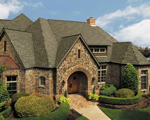

Pierce Roofing Contractor - the Finest company for Your Needs!
Kessler Roofing, Inc. is your local Pierce roofing contractor with the skills and tools to ensure your residential or residential roofing project in Pierce, CO is completed to perfection. You don't have to settle for less when it comes to finding the right Pierce roofing contractor for your project. Just call on Kessler Roofing, Inc. to serve as your Pierce roofing contractor, and let us show you what true service looks like!
We are well known for our phenomenal customer service and quality roofing work. Just take a look at some of our recent client testimonials, and you'll see how far our reputation as a reliable Pierce roofing contractor goes! We also encourage you to look through our gallery of photos showcasing some of the Pierce roofing projects we have completed for our residential clients.
Don't settle for less. Get the best! Call Kessler Roofing, Inc. today for Pierce roofing services!
Kessler Roofing, Inc. - Pierce Roof Repairs
Is your roof damaged? Call the company you can rely on for quality Pierce roof repairs that are done correctly! Call Kessler Roofing, Inc. today. We offer reliable roof repair services using quality products while ensure our customers get amazing customer service and satisfaction with the work of our Pierce roof repairs team.
The Pierce roof repairs and roof replacement services we do are top notch! Put your trust in our expertise as a professional Pierce roof repair company. Call us today to schedule your needed repairs, and don't wait for them to get worse. We can also provide you with maintenance programs that will keep you on top of any necessary repairs, saving you money in the long run and ensuring you get a full life out of your Pierce roof.
Pierce Roofer
Kessler Roofing, Inc. is the Pierce roofer dedicated to your roofing needs. From roof inspections to roof replacement, roof repairs, and new roof installation, we care about your roofing project. When you choose us to serve as your Pierce roofer, you can expect:
- Reliability – Our Pierce roofers offer year around roofing and repair services
- Flexibility – We are fully compliant with your billing procedures and needed roofing services
- Specialized Service – We have been providing roof repair and replacement services in Pierce for years
- Locally owned - and proud of it! Our Pierce roofers live in Colorado and take pride in the work they do for all our Pierce residential clients.
As a professional Pierce roofer, our roofing services include new roof construction and installation, roof replacement, roof inspections, roof maintenance, roof repairs, and more. Call us today for a no-obligation consultation or to request an estimate for the cost of your Pierce roofing project.
- Pierce roofing contractor
- Pierce residential roofing
- Pierce roofing contractor
- Pierce roof replacement
- Pierce roofer
- Pierce roof repairs
- Pierce roofs
- Pierce roofing
- Pierce roofing services
- Pierce cedar shingles
- Pierce composite shingles
- Pierce roofing shingles
Pierce Roof Replacement
Is your roof still in a good condition? Well, if your roof is starting to leak or it is 15 years old or older, you may need to contact an expert Pierce roofing contractor to evaluate the condition of your roof. Don’t wait for even more roof damages to occur, as this could result in the need for Pierce roof replacement services.
How will you know if you need a new roof? Sometimes it is as simple as considering the age of your Pierce roof. If your roof is less than 15 years old and only needs regular roof maintenance, then it is doubtful that you will need to invest in Pierce roof replacement services. Small repairs and regular maintenance are enough for it to last several more seasons. But if your roof is a lot older (15 years or older) and fragile unlike when it was first installed, it is highly probably that a roof replacement is in your future if you want to keep your home in good condition.
Before hiring a professional Pierce roof replacement contractor, make sure to keep in mind these helpful tips. It is not a good idea to just hire somebody right away. First, hire not just a roofer but a professional roofer – a licensed Pierce roofing contractor. From this, you can be sure that a professional will be handling your Pierce roof replacement.